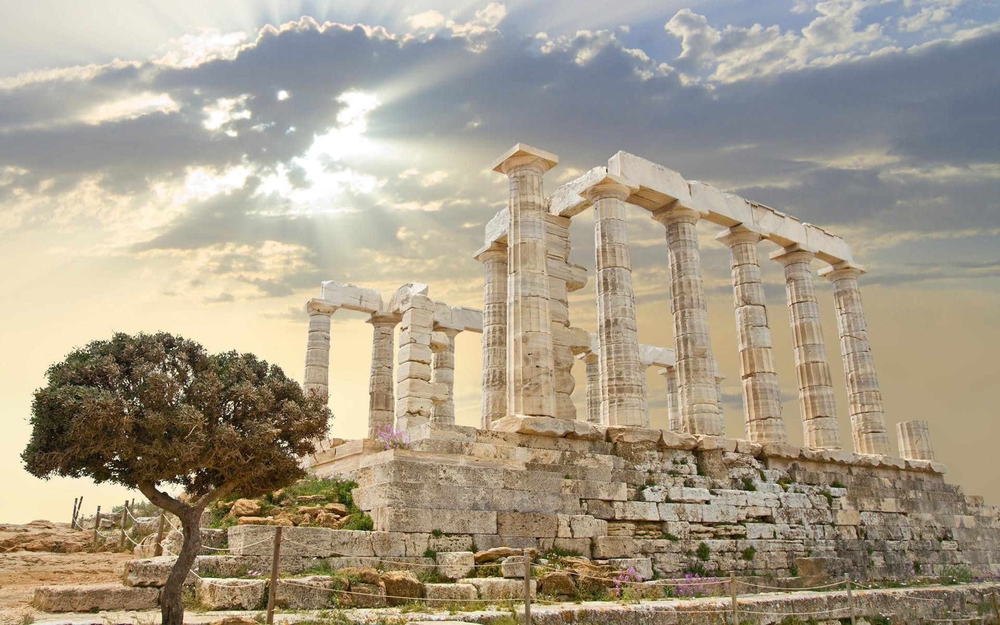

아테네는 그리스의 수도이자 최대의 도시이며, 아티키 주의 중심 도시이다. 세계적으로 오래된 도시이며, 역사 시대가 개막한 지 3,400년에 이른다.
아테네는 상고시대 이래로 여행자들이 찾는 관광지였다.
그리스 중앙 정부는 유럽연합의 지원으로 베니젤로스 공항(Venizelos)과 아테네 지하철을 위한 자금 마련에 착수했으며 최근에는 세계에서 6번째로 많은 관광객들이 찾는 수도가 되기도 했다.
아테네에는 고전기의 유산이 아직 잘 남아있다. 수많은 고대 기념물과 예술 작품이 남아 있으며, 서양 초기 문명의 기념비적 건물인 아크로폴리스의 파르테논 신전도 있다. 그리고 로마 제국과 비잔티움 제국 시대의 다양한 유적이 있으며, 오스만 제국의 유적도 약간 남아있어 이 도시의 유구한
역사를 증언하고 있다. 그리스 독립 국가가 세워진 1830년으로 거슬러 올라가 근대에 들어선 랜드마크도 있는데, 그리스 의회 의사당, 그리스 국립 도서관, 아테네 대학교, 아테네 학회가 있다. 또 아테네에서 1896년 제1회 근대 올림픽 경기가 열렸으며, 108년 뒤에 다시 2004년 하계 올림픽을
개최하였다.